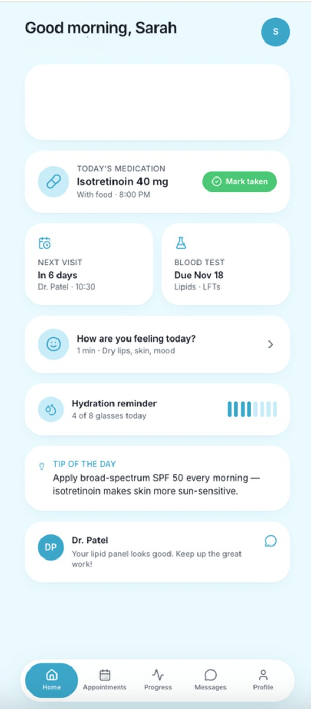
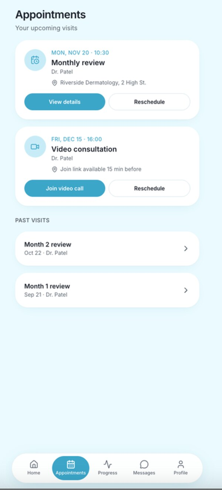
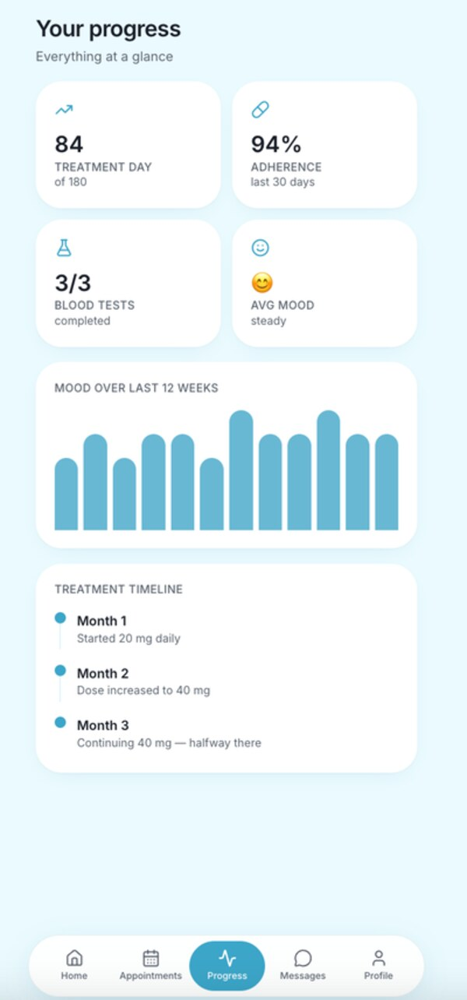
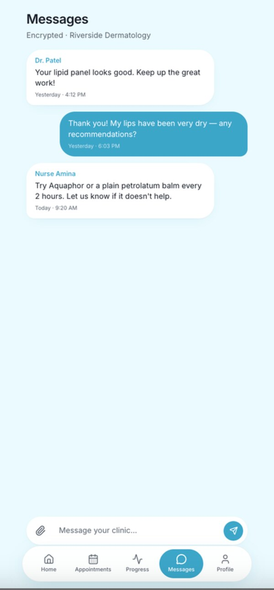
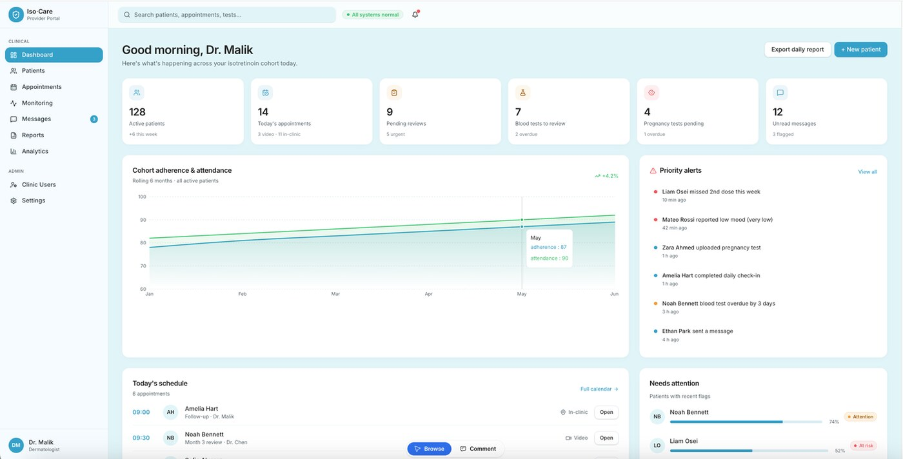
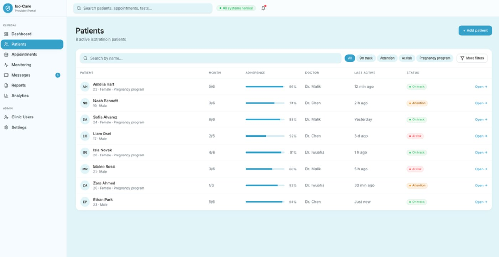

A London-first B2B2C business case for a clinician-supervised digital companion that helps patients complete isotretinoin treatment safely — built and modelled from problem statement through to a three-year financial forecast.
Isotretinoin is one of the most effective treatments for severe acne, but it requires structured, repeated follow-up: blood tests, pregnancy-prevention checks and mental-health monitoring. In practice, that follow-up is scattered across clinic letters and manual reminders — and disengagement often happens early.
14.6% of UK 10–24 year-olds are diagnosed with acne — up 7.4pp since 1990. Severe cases route into a highly regulated isotretinoin pathway.
In a 458-patient US cohort, only 53.9% completed therapy and 15.5% were lost to follow-up — most after the very first review.
MHRA guidance (2025–26) now permits remote follow-up and supervised remote pregnancy testing — opening the door to a digital pathway.
Clera digitises the tasks that already exist in the isotretinoin pathway — deliberately scoped away from diagnosis, dosing or automated lab interpretation to stay outside MHRA's medical-device boundary.

Medication, blood-test and wellbeing prompts in one place.

Monthly reviews, video visits and rescheduling stay visible.

Adherence, blood tests and mood trends show treatment progress.

Patients can ask about side effects and concerns earlier.

Clinician dashboard — cohort overview. One view of active patients, pending reviews, blood tests, pregnancy tests, messages and priority alerts.

Patient prioritisation. Shows who is on track, needs attention, or is at risk — flags low mood, missed medication and overdue blood tests.
For a regulated B2B2C pathway, patient-level TAM overstates the real opportunity. Market size is anchored to the ~40–50 London dermatology providers who actually prescribe and monitor isotretinoin.
A three-phase rollout deliberately avoids over-reliance on long NHS procurement cycles, building a credible evidence base before scaling.
Lock a strict non-medical-device MVP scope; complete DPIA and baseline DTAC evidence; usability-test with patients and clinicians.
3–5 London private/online dermatology pilots; monthly data reviews on missed tests, check-in completion and clinician workload.
Consolidate pilot evidence into a formal impact dossier aligned with the NICE Evidence Standards Framework; pursue NHS app-library inclusion.
Built the B2B2C revenue and cost model underpinning the business case: derived the £24,000 base-case annual subscription (with £12K/£36K sensitivity scenarios) from a per-patient sense-check against RPM SaaS benchmarks (MedM Care, HealthArc), modelled the COGS/fixed-cost split behind a 78.1% gross margin, and produced the three-year P&L forecast — revenue scaling £72K → £192K → £360K as adoption grows from 3 to 15 providers, with EBITDA losses narrowing from £(166)K to £(140)K and a £300K equity / £75K grant funding plan keeping cash positive throughout.